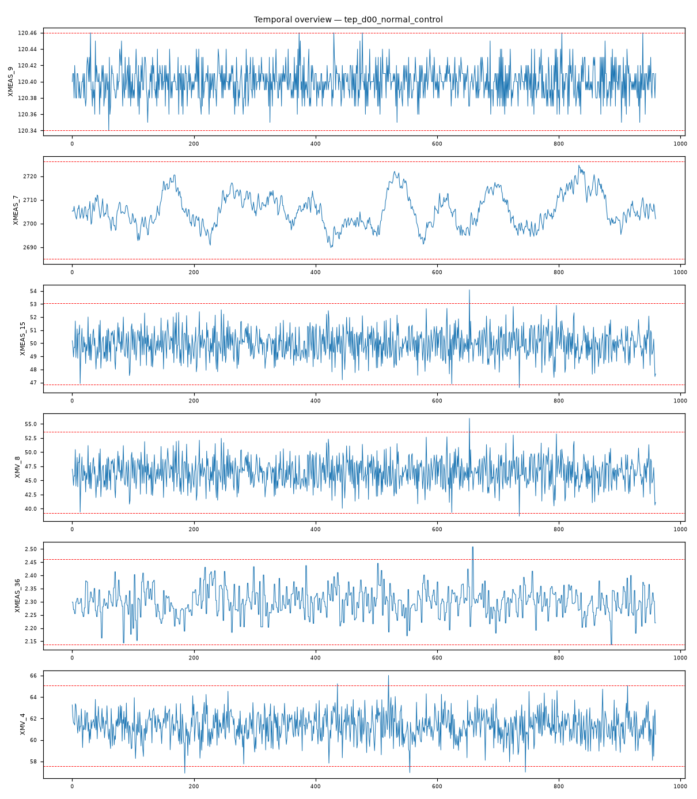

202609121645490_bench_tep_d00_normal_control · 执行模式 zcode-direct受控稳态正常运行（d00 无故障基线 48h）：全通道处于正常调节波动（max|z|≤3.97），跨域强耦合全部为控制回路结构对（被控量-操纵量成对出现）。
XMEAS_15 max|z|=3.97，超3σ占比 0.2%XMV_8 max|z|=3.97，超3σ占比 0.2%XMEAS_36 max|z|=3.85，超3σ占比 0.4%XMV_4 max|z|=3.76，超3σ占比 0.6%XMEAS_14 max|z|=3.57，超3σ占比 0.5%XMV_10 max|z|=3.53，超3σ占比 0.2%强相关对：XMEAS_12 ~ XMV_7: r=1.000；XMEAS_15 ~ XMV_8: r=1.000；XMEAS_17 ~ XMV_11: r=-0.999；XMEAS_7 ~ XMEAS_13: r=0.997；XMEAS_1 ~ XMV_3: r=0.997；XMEAS_19 ~ XMV_9: r=0.987
| # | 假设 | 机制 | 置信 | 裁决 |
|---|---|---|---|---|
| 1 | 受控稳态正常运行（无故障基线） | normal-operation | 90% | surviving |
| 2 | 低幅早期故障（隐匿演化） | normal-appearance | 10% | eliminated |
| 3 | 传感器组同步漂移 | sensor-drift | 8% | eliminated |
| 假设 | 机理链 | 支撑证据 | 证伪条件 |
|---|---|---|---|
| 受控稳态正常运行（无故障基线） | 多回路控制下各通道围绕设定值调节波动（brief：全列谱 max|z|≤3.97，超3σ占比 ≤0.6%） 调节波动的耦合签名 = 控制回路结构对（brief：XM12~XMV7 r=1.000、XM15~XMV8 r=1.000、XM1~XMV3 r=0.997、XM19~XMV9 r=0.987） 960 行记录的最大超限为液位-阀控制对的正常调节瞬态（XM15/XMV_8 3.97） | L3 统计：无主导异常列（最大 3.97，960 行下高斯尾部预期内）——无故障 signatures L3 统计：最强耦合对全部为控制结构对（液位-阀 1.000×2、进料-阀 0.997、蒸汽-阀 0.987、底流-冷凝阀 -0.999）——调节系统正常工作的直接证据 L3 统计：气相连通对 XM7~XM13 r=0.997（反应器-分离器压力）——工艺气相结构正常 L4 视觉：全通道带状稳态波动，无阶跃/爆发/持续偏移形态（fig_temporal_overview.png） | 若任一通道出现 ≥5σ 持续偏移平台，正常判定推翻 若控制对耦合出现断裂（被控量与操纵量解耦），需重新审查 |
| 低幅早期故障（隐匿演化） | 早期故障应留下渐进偏移或微事件链痕迹 | L3 统计：全列谱超3σ占比 ≤0.6% 且为孤立瞬态 | 若延长记录出现基线单向缓移，本假设复活 |
| 传感器组同步漂移 | 漂移无法产生成对的控制结构耦合 | L3 统计：强耦合对与控制回路一一对应（被控量-操纵量成对出现，r 0.987-1.000） | 若离线校准发现执行器位置反馈漂移，本假设复活 |
| 维度 | 得分（/10） |
|---|---|
| data_quality_awareness | 9 |
| variable_classification | 9 |
| time_alignment_and_sorting | 9 |
| visualization_quality | 9 |
| evidence_based_conclusions | 9 |
| correlation_vs_causation | 9 |
| uncertainty_disclosure | 9 |
| report_quality | 9 |
| no_over_claiming | 9 |
| completeness | 9 |
Step 0 setup（setup.mjs）→ Step 1 inspect（inspect.mjs）→ Step 2 本体（context-builder 角色）→ Step 3 统计（stats 包 + 驱动单变量/相关分析）→ Step 3.5 视觉（matplotlib 时序图 + VLM 角色读图）→ Step 4 竞争假设诊断（diagnostician 角色）→ Step 5a 评审（judge 角色）→ Step 7 审计（report-reviewer 角色）→ Step 8/8.5 HTML 与审校。统计引擎：stats-package。

judge 91/100（pass）；审计 ENDORSED：正常判定三面证据一致：统计预期（n=960 尾部）、形态（孤立瞬态）、结构（控制对完整）；判定保守且无过度报警。
| 变量 | max|z| | 超3σ占比 |
|---|---|---|
| XMEAS_15 | 3.97 | 0.20% |
| XMV_8 | 3.97 | 0.20% |
| XMEAS_36 | 3.85 | 0.40% |
| XMV_4 | 3.76 | 0.60% |
| XMEAS_14 | 3.57 | 0.50% |
| XMV_10 | 3.53 | 0.20% |
强相关对（经反假相关与多重检验校验）：XMEAS_12 ~ XMV_7: r=1.000；XMEAS_15 ~ XMV_8: r=1.000；XMEAS_17 ~ XMV_11: r=-0.999；XMEAS_7 ~ XMEAS_13: r=0.997；XMEAS_1 ~ XMV_3: r=0.997；XMEAS_19 ~ XMV_9: r=0.987
18 项必需产物：input_manifest / user_context / run_config / ontology / schema / feature_summary / analysis_parameter_selection / scenario_classification / anomaly_report / validate_report / data_analysis_conclusion / plot_manifest / visual_analysis / image_captions / diagnosis / evidence / confidence / reasoning_chain / judge_feedback / report.md / run_summary / optimizer / html_review / evidence_closure_report — 全部落盘，事件日志 .pipeline_events.jsonl 经 pipeline-log-check 校验。
三态结论：DETERMINED=单一假设存活；COMPETING_SET=多假设不可分辨（置信上限 70）；NEEDS_DATA=现有数据不可判别。CDR=Top-1 且 DETERMINED（FDDBenchmark 口径）。证据等级 L1 直接测量 / L3 统计 / L4 视觉 / L5 本体机理。